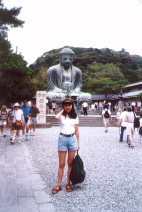

Japan (97.8)
Kamakura

| I went back to Japan during summer in 1997. Kamakura is a capital in Kamakura era (1192-1333). Samurai (warrior) was strong in the Japanese history. There are many foreigners to visit here. I believe that Kamakura is the second famous old town in Japan. (Kyoto is the most famous town.) |

=at Kamakura in Japan(97.8)=
[English home]